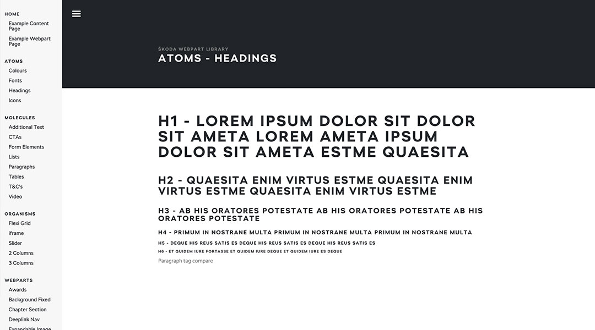

A fully responsive set of reviewed and tested webparts that can be used across the seperate desktop and mobile ŠKODA platforms.
With an account that runs for 12 years, with countless designers and developers coming and going, the lead designer and myself decided we needed consistency going forward. We have always have rough guidelines, but we embarked on starting from scratch, creating design guidelines and developing resuable modules that could be used accross the desktop and mobile platforms. We had the basics that we needed from the ŠKODA CI but we needed to set the rest. We created a Sketch file with the fonts, colours and basic 'atoms' and then used Brad Frosts Atomic Principles to build the Molecules, Organisms and then Webparts (we didn't following Brad too strictly as the Sharepoint CMS wouldn't work in this way). Due to the Sharepoint limitations, I actually ended up making a CMS within a CMS where we would just change copy and images but keep the modules untouched.